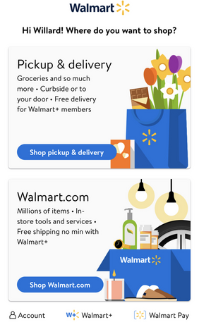

Parc: Alignment
Amazon
www.amazon.comAlignment here from the top shows links or navigation section horizontaly set, enabling the user to easily see that there are more pages and options to visit. That setup is similiar for most elements especially where your can scroll left to right or vice versa when serching for different items on the pages. Everthing is aligned methodically.
PARC: Proximity
Walmart
www.walmart.com
Elements in this page are are set in such away that those that are related are either closer together and farther or away from each other if not related. Making it clear to see and find stuff on the screen.
PARC: Contrast
Family Search
www.familysearch.orgThis is what I call a color play. Contrast is well explained because as you move from top to bottom on this page its easy to watch and no eye straining. The background and foreground colors enhance readability. They also complement each other neately and the text is using a hierarchical set up.